Intro to Big Data Analytics
Bigram counts and average movie ratings with Hadoop MapReduce
Ten English-language books from Project Gutenberg were uploaded as individual plain-text files to /hw1_Lala_Huseynova/books. The files total 6,708,212 bytes. The smallest is 254,782 bytes, so all ten exceed the 100 kB minimum.
| Book | Author | Bytes | Source |
|---|---|---|---|
| The Black Arrow | Robert Louis Stevenson | 466,508 | Project Gutenberg #848 |
| The Country of the Pointed Firs | Sarah Orne Jewett | 254,782 | Project Gutenberg #367 |
| The Custom of the Country | Edith Wharton | 823,004 | Project Gutenberg #11052 |
| The House of the Seven Gables | Nathaniel Hawthorne | 649,593 | Project Gutenberg #77 |
| The Lost World | Arthur Conan Doyle | 451,824 | Project Gutenberg #139 |
| The Mill on the Floss | George Eliot | 1,212,404 | Project Gutenberg #6688 |
| The Moonstone | Wilkie Collins | 1,135,528 | Project Gutenberg #155 |
| The Prisoner of Zenda | Anthony Hope | 322,863 | Project Gutenberg #95 |
| The Story of an African Farm | Olive Schreiner | 583,169 | Project Gutenberg #1441 |
| The Woodlanders | Thomas Hardy | 808,537 | Project Gutenberg #482 |
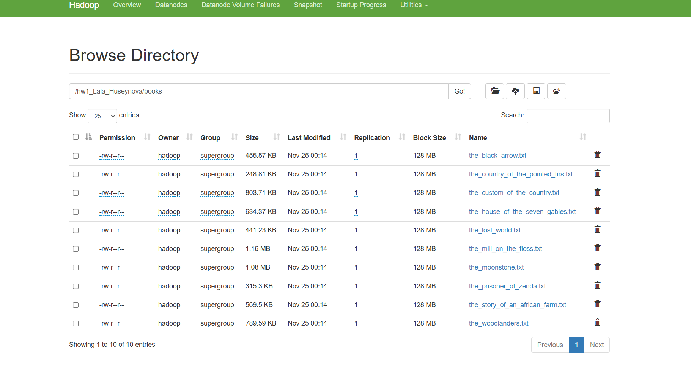
The selected file, ratings.csv, is 709,550,327 bytes and is stored at /hw1_Lala_Huseynova/dataset/ratings.csv. Its columns are userId,movieId,rating,timestamp. It is the Movies option in the assignment and supplies a movie ID for grouping and a numerical rating for averaging. Kaggle dataset page
The list contains 123 unique words, exceeding the 50-word minimum. The second bigram run excludes pairs containing these words to measure how they affect the ranking, the volume of mapper output, and the number of distinct keys.
Mapper. Hadoop supplies each line as a record. The mapper lowercases the line with Locale.ROOT and extracts words with a regular expression. It drops surrounding punctuation and retains single internal apostrophes, hyphens, periods, and underscores between word segments. It also normalizes curly apostrophes and two Unicode hyphen variants.
The mapper remembers the previous token only within the current line. It emits each eligible adjacent pair as the key with a 64-bit count of one. In the filtered run, each mapper loads the stopword file into a set during setup. A pair is skipped if either word is in that set. The window still advances through every token. For example, with of in the list, king of country contributes zero pairs because both original pairs contain of.
Combiner and reducer. They use the same summing class. The combiner adds repeated pair counts locally, and the reducer adds the resulting counts for each pair across the input splits.
Driver. The driver accepts HDFS input and output paths and an optional stopword file. It configures the text input format and the mapper, combiner, and reducer, then waits for job completion.
Both jobs used the same ten books with Hadoop 3.5.0 and Java 17. Each completed successfully with 10 mappers and one reducer, processing 125,869 input lines. The books were processed in full, including Project Gutenberg headers and licensing text.
| Mode | Successful job ID | HDFS output directory |
|---|---|---|
| Unfiltered | job_1795619064165_0005 | /hw1_Lala_Huseynova/output/ |
| Filtered | job_1795619064165_0006 | /hw1_Lala_Huseynova/output/ |
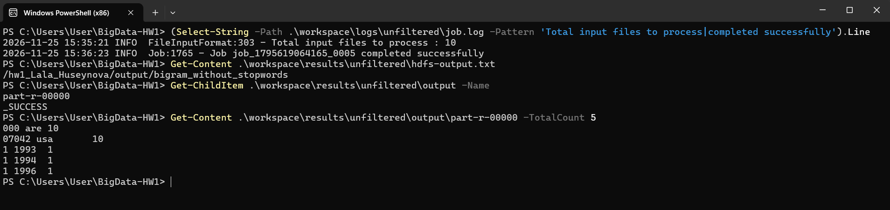
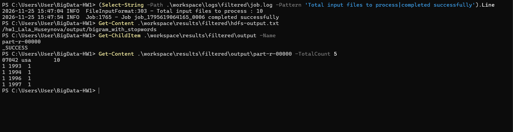
Mapper. The mapper reads one CSV line at a time and skips the expected header at byte offset zero. It checks for four fields and parses the movie ID and rating. A malformed row, a nonpositive movie ID, or a nonfinite or out-of-range rating increments INVALID. Each valid row emits the movie ID with a pair containing the rating and a count of one. The mapper counts the header and valid rows separately.
Combiner and reducer. The combiner adds partial rating sums and their counts for each movie. Carrying both totals gives each rating equal weight, even when one mapper processes more ratings for a movie than another. The reducer merges all partial totals, divides the sum by the count as a floating-point value, and writes the movie ID, count, and average for every movie.
The full 709,550,327-byte dataset ran as job_1795619064165_0008 with six mappers and one reducer. YARN reported SUCCEEDED and the output was saved at /hw1_Lala_Huseynova/output/group_average.
| Input lines | Headers | Valid ratings | Invalid rows | Movies | Eligible (≥ 50) |
|---|---|---|---|---|---|
| 26,024,290 | 1 | 26,024,289 | 0 | 45,115 | 12,534 |
The rating counts in the reducer output sum to 26,024,289, matching the valid-record and map-output counters. The 45,115 distinct movie IDs match Hadoop’s reduce-output count.
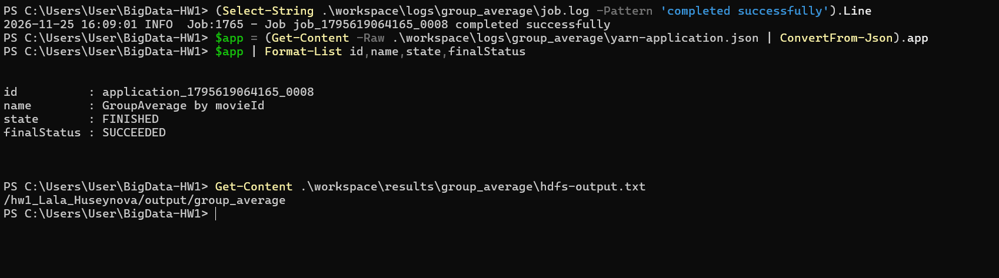
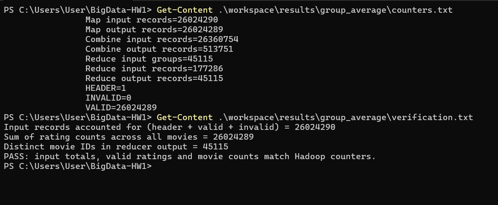
The Java ranking utility reads the saved reducer output and keeps movies with at least 50 ratings. It sorts by the full stored average in descending order and breaks ties by ascending numeric movie ID. The table displays averages to four decimal places.
| Rank | Movie ID | Record Count | Average Rating |
|---|---|---|---|
| 1 | 159817 | 754 | 4.4788 |
| 2 | 318 | 91,082 | 4.4290 |
| 3 | 170705 | 284 | 4.3944 |
| 4 | 171011 | 95 | 4.3526 |
| 5 | 858 | 57,070 | 4.3398 |
| 6 | 50 | 59,271 | 4.3002 |
| 7 | 100044 | 197 | 4.2716 |
| 8 | 527 | 67,662 | 4.2665 |
| 9 | 1221 | 36,679 | 4.2635 |
| 10 | 2019 | 13,994 | 4.2551 |
| 11 | 904 | 21,335 | 4.2326 |
| 12 | 1203 | 16,896 | 4.2312 |
| 13 | 2959 | 60,024 | 4.2307 |
| 14 | 1193 | 40,103 | 4.2291 |
| 15 | 166024 | 183 | 4.2268 |
| 16 | 163809 | 157 | 4.2197 |
| 17 | 142115 | 273 | 4.2179 |
| 18 | 912 | 30,043 | 4.2144 |
| 19 | 750 | 28,280 | 4.2130 |
| 20 | 1212 | 7,676 | 4.2094 |
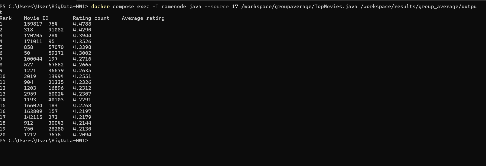
What are the 25 most frequent bigrams and their respective counts when stopwords are not removed?
| Rank | Bigram | Count | Rank | Bigram | Count |
|---|---|---|---|---|---|
| 1 | of the | 7,306 | 14 | had been | 1,457 |
| 2 | in the | 5,176 | 15 | of his | 1,385 |
| 3 | to the | 3,226 | 16 | for the | 1,313 |
| 4 | on the | 2,525 | 17 | he was | 1,297 |
| 5 | it was | 2,463 | 18 | she had | 1,277 |
| 6 | and the | 2,267 | 19 | by the | 1,266 |
| 7 | to be | 2,206 | 20 | was a | 1,261 |
| 8 | at the | 2,058 | 21 | from the | 1,240 |
| 9 | he had | 1,693 | 22 | it is | 1,239 |
| 10 | with a | 1,627 | 23 | and i | 1,098 |
| 11 | in a | 1,605 | 24 | of her | 1,089 |
| 12 | of a | 1,594 | 25 | i have | 1,086 |
| 13 | with the | 1,579 |
All 25 pairs contain at least one word from the stopword list. The leading pairs, of the (7,306) and in the (5,176), show how often common prepositions and articles occur together in the ten books.
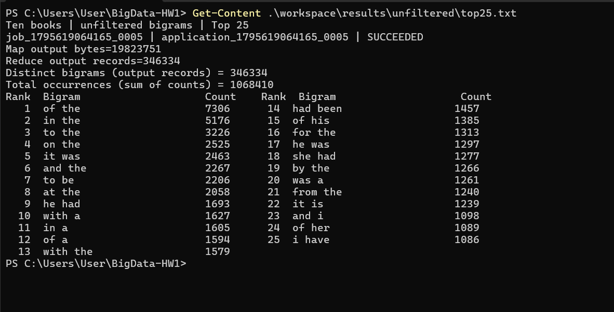
What are the 25 most frequent bigrams and their respective counts when stopwords are removed?
| Rank | Bigram | Count | Rank | Bigram | Count |
|---|---|---|---|---|---|
| 1 | project gutenberg | 720 | 14 | electronic works | 160 |
| 2 | mr franklin | 386 | 15 | know what | 160 |
| 3 | mr tulliver | 260 | 16 | miss rachel | 156 |
| 4 | said mrs | 244 | 17 | mr godfrey | 153 |
| 5 | said maggie | 219 | 18 | young man | 146 |
| 6 | said mr | 217 | 19 | van degen | 141 |
| 7 | sergeant cuff | 196 | 20 | first time | 135 |
| 8 | mr bruff | 195 | 21 | mr blake | 134 |
| 9 | sir daniel | 179 | 22 | mr spragg | 134 |
| 10 | said tom | 178 | 23 | archive foundation | 130 |
| 11 | mrs tulliver | 176 | 24 | gutenberg electronic | 130 |
| 12 | tant sannie | 174 | 25 | mrs charmond | 122 |
| 13 | mrs todd | 172 |
The filter removed all 25 leaders from the unfiltered ranking. Names and forms of address such as mr franklin and mr tulliver moved into the leading positions. Repeated publisher and licensing text also shaped the ranking. project gutenberg ranked first with 720 occurrences, and archive foundation also appeared in the Top 25.
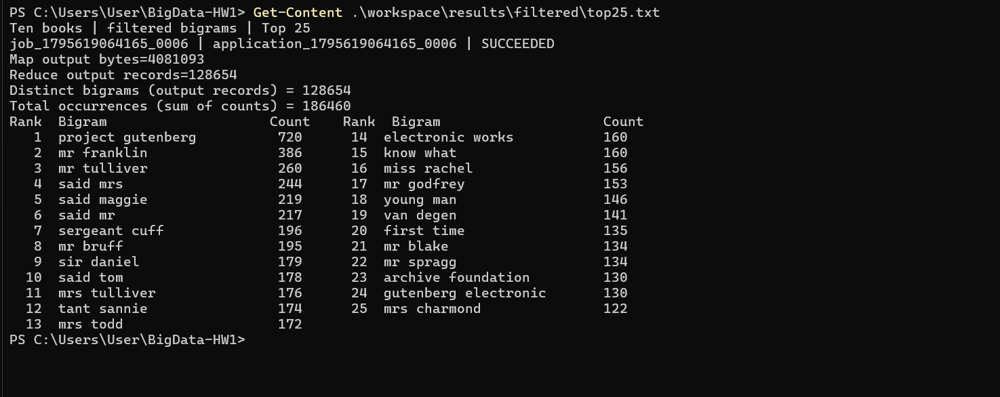
Based on your application output and Hadoop job counters, how does removing stopwords affect the total number of bytes emitted by the mappers? Explain one specific way this change could affect the performance of your MapReduce job.
| Measure | Without filtering | With filtering | Reduction | Reduction (%) |
|---|---|---|---|---|
| Map output bytes | 19,823,751 | 4,081,093 | 15,742,658 | 79.41% |
Percentage reduction = ((19,823,751 − 4,081,093) ÷ 19,823,751) × 100 ≈ 79.41%
Filtering reduced mapper emissions from 1,068,410 to 186,460 records. Each skipped pair avoids serializing a key and value and putting them in the mapper’s intermediate buffer. This gives Hadoop fewer records to sort and can reduce spill writes and disk I/O.
Map output bytes measures emitted intermediate data before combining. The Reduce shuffle bytes counter measures the intermediate data fetched by reducers after map-side processing, which includes combining. Shuffle traffic fell from 11,629,569 to 3,583,570 bytes, reducing the amount of data transferred and merged in these runs.
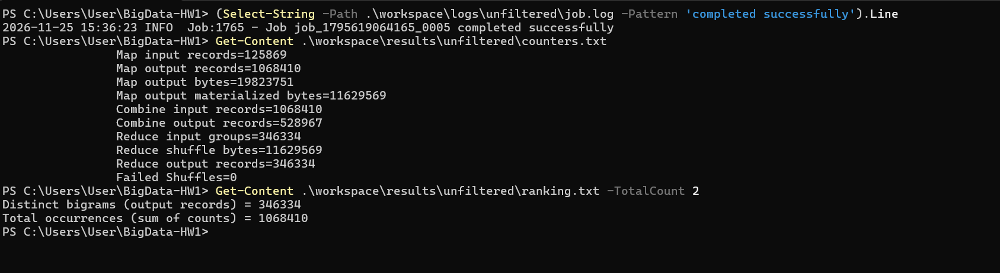
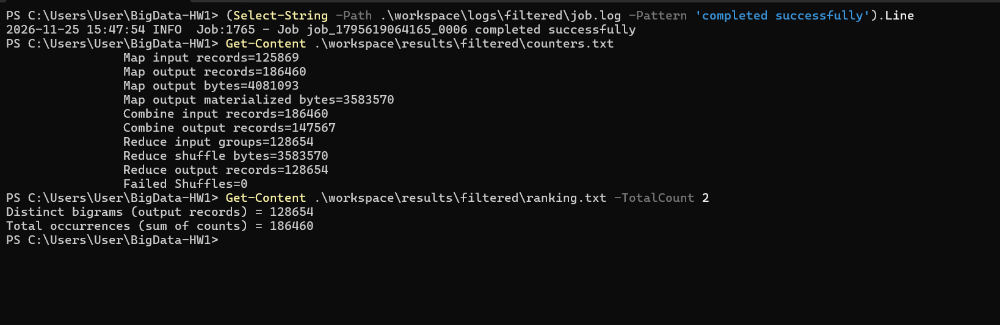
What is the size of the keyspace (number of distinct bigrams) with and without stopword removal? How does the difference relate to the number of stopwords in your list? Explain your observations.
| Measure | Without filtering | With filtering | Reduction | Reduction (%) |
|---|---|---|---|---|
| Distinct bigrams | 346,334 | 128,654 | 217,680 | 62.85% |
Percentage reduction = ((346,334 − 128,654) ÷ 346,334) × 100 ≈ 62.85%
The distinct key counts from both saved reducer outputs equal their respective Reduce output records counters (Figures 9 and 10). A row-by-row check found that all 128,654 retained keys had the same counts in both runs and that none contained a stopword.
The 123 unique stopwords removed 217,680 distinct keys because a single stopword can appear next to many different words, in either position. For example, the is part of of the, in the, and to the. The size of the reduction depends on the combinations actually present in the books.
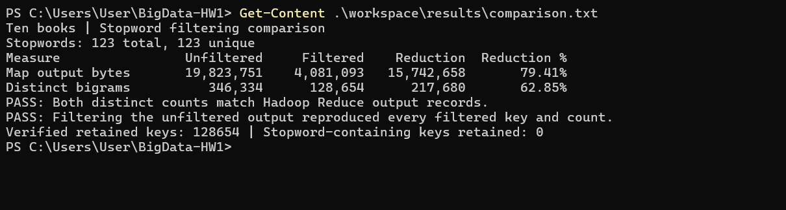
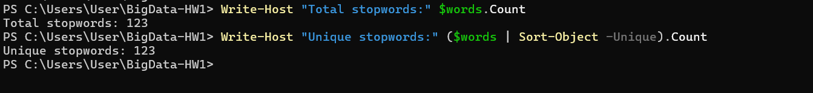
Both Java MapReduce applications completed on Hadoop. With stopword filtering, the bigram job emitted 79.41% fewer mapper bytes and produced 62.85% fewer distinct keys. The movie-rating job aggregated 26,024,289 valid ratings across 45,115 movies. The final ranking selected the 20 highest averages from the 12,534 movies with at least 50 ratings.